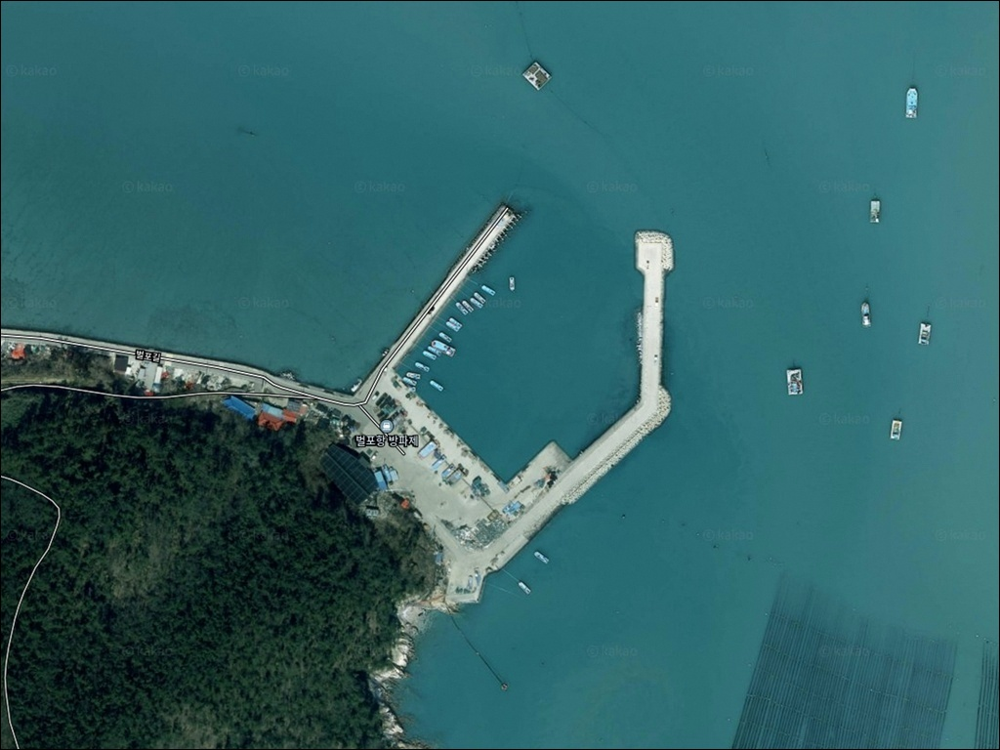
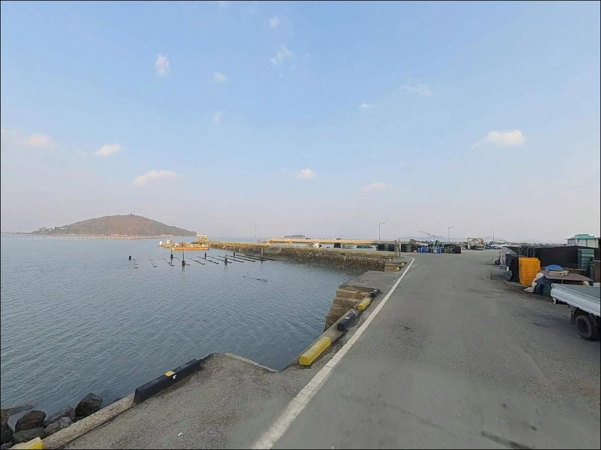
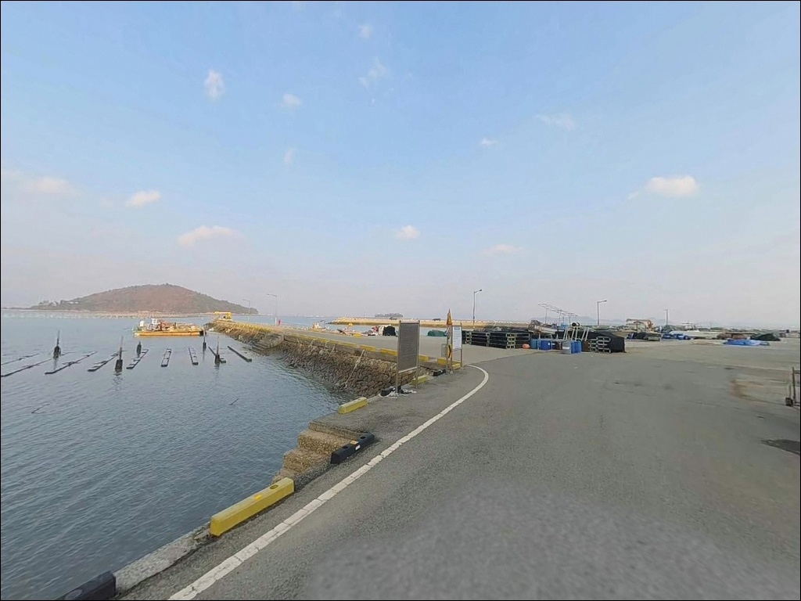
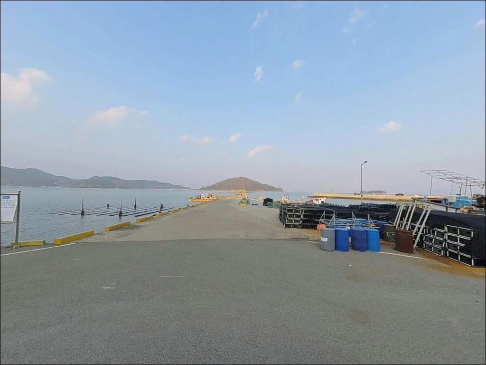
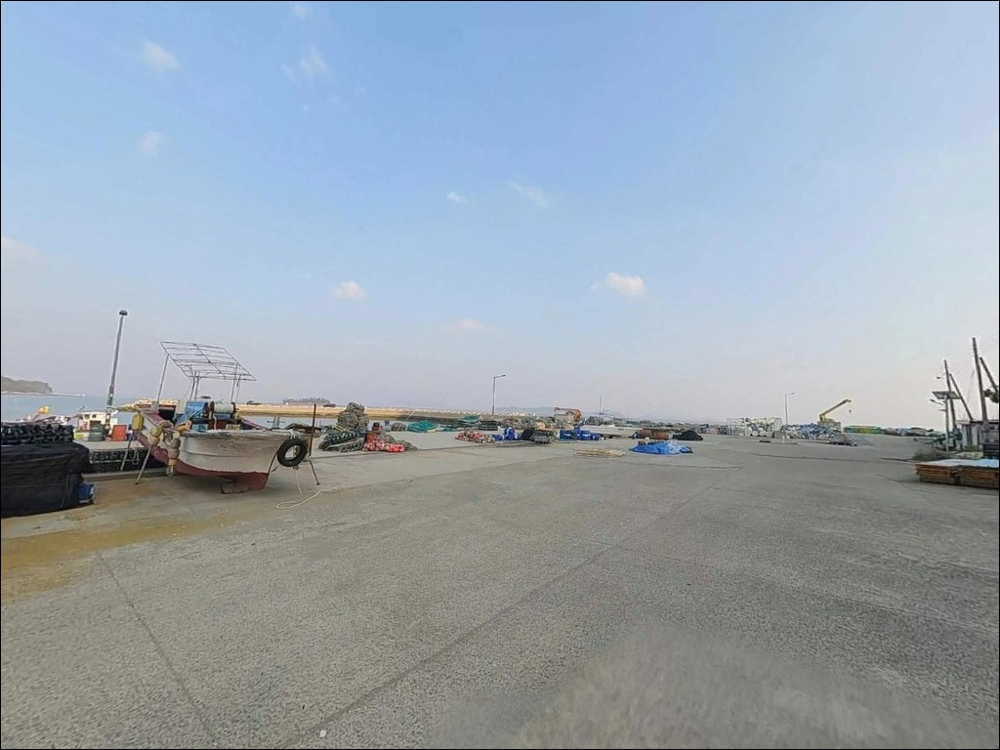
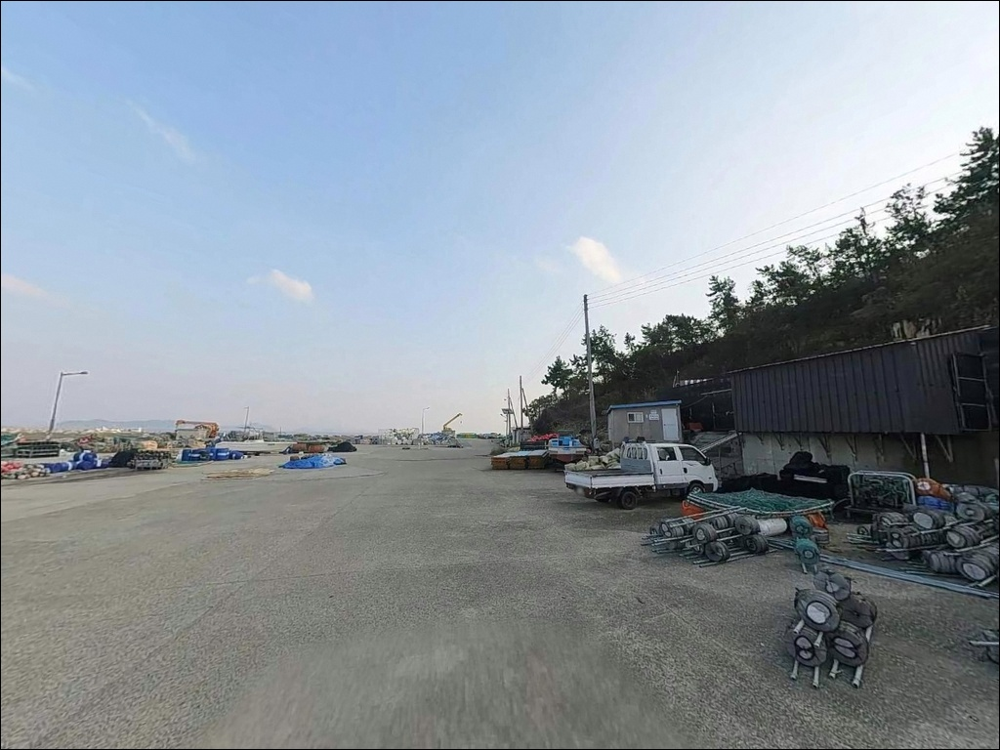
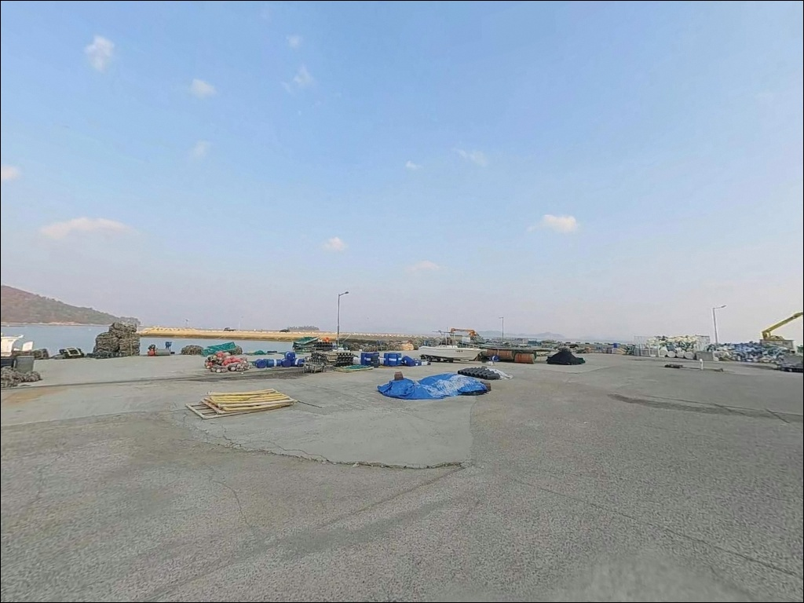
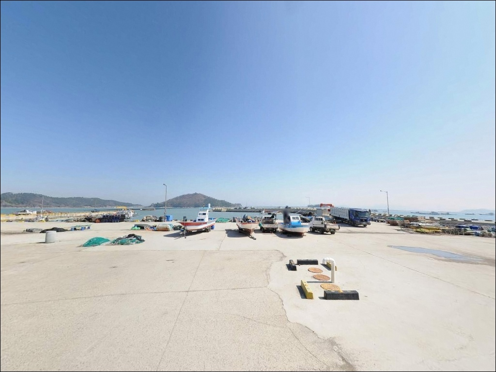
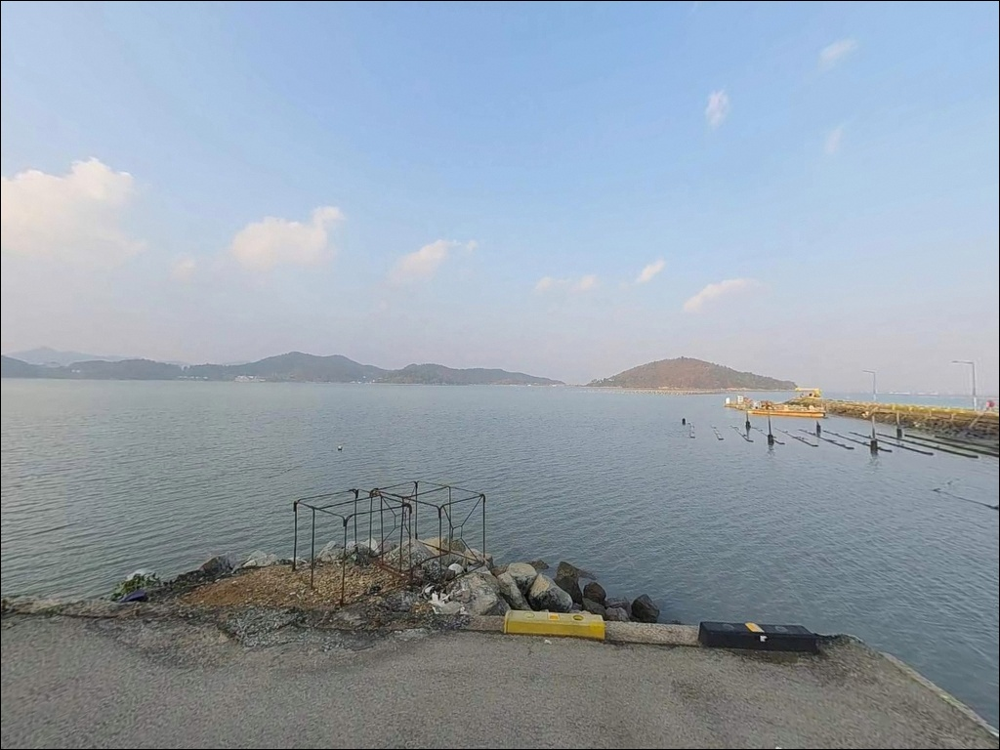

이 페이지에는 광고(제휴 링크 포함)가 있으며, 광고 링크를 통해 구매하면 운영자가 판매 수익 또는 수수료를 받을 수 있습니다. 포인트 사진: 카카오맵 스카이뷰·로드뷰. 이 페이지의 지도·사진 이미지는 카카오맵의 실제 서비스 이미지와 다를 수 있습니다.


벌포항, 벌포방파제, 진도 전남 진도군 고요함이 매력인 차박, 낚시 감성 장소
포인트 안내
벌포항(벌포방파제)
전남 진도군 고군면 지막리 1715
명량해협 영향권에 드는 벌포항은
사리 전후 조류가 강해,
물때 계산 없이 방문하면
방파제 외항 자리에서
채비 컨트롤 자체가 불가능해지는
구조입니다.
강한 조류는 어떤 채비를 써도
바닥에 안착시키기 어려운 상황을 만들어,
낚시 시간 전체를 조류와 싸우는 데
쓰게 됩니다.
이 글은 벌포항의 진입 환경, 지형 조건,
낚시 스타일 적합성에 집중합니다.
조황 단정과 특정 어종 보장은
이 글의 범위에 포함되지 않습니다.

1. 포인트 위치와 진입 동선 분석
벌포항은 고군면 해안도로에서
벌포마을 쪽으로 갈라지는 소규모 도로를 따라
진입하는 구조입니다.
지방어항으로 분류된 항구인 만큼
선착장 앞까지 포장도로가 이어져 있으나,
폭이 좁은 구간이 포함되어 있어
소형~중형 차량 기준으로 접근하는 것이
기본입니다.
대형 SUV나 캠핑카 차량이라면
출발 전 위성지도로 진입로 폭을
반드시 확인하는 편이 안전합니다.
마을 안쪽 항구 구조상 회차 공간이
넉넉하지 않아,
소형 차량 기준 회차가 가능한 수준이며
대형 차량은 진입 전 갓길 여건도
함께 살피는 것이 좋습니다.
주차는 선착장 앞 공터와
방파제 초입 주변 공간을
활용하는 방식이 일반적입니다.
어선 출입 동선을 막지 않는 자리가
우선이며, 주민 작업 시간대를
배려한 위치 선정이 기본 매너입니다.

2. 차박 환경과 야간 체류 여건
벌포항은 벌포마을과 인접한 소규모 어촌 항구입니다.
민가가 가까운 편이라 야간에도
어느 정도 생활 소음이 있을 수 있으며,
새벽 어선 출항이 있는 날에는
차량 이동과 엔진 소리가 함께
들릴 수 있습니다.
선착장 주변에는 최소한의 가로등이
설치되어 있는 구조이나,
방파제 전체가 밝게 비추어지는
수준은 아닙니다.
야간 낚시와 체류에는
개인 조명 장비가 반드시 필요합니다.
주차 공간이 협소하고 마을과 가까운 특성상
차박을 메인 목적으로 삼기보다는
낚시 후 짧게 머무는 보조 체류 방식이
이 포인트 여건에 현실적으로 맞습니다.
차박이란 차량을 숙박 공간으로 활용하며
현장에서 하룻밤 머무는 여행 방식으로,
벌포항에서는 스텔스 위주의
조용한 단기 체류를 기준으로 계획하는 편이
좋습니다.


3. 주변 편의시설 및 인프라 현황
벌포항 반경 3km 이내에는
편의점이나 마트를 기대하기 어렵습니다.
소규모 어촌 마을 항구 특성상
완전 자급 체제로 진입하는 것이
현실적인 준비 방식입니다.
식수, 얼음, 낚시 소품, 연료 등은
출발 전 모두 갖춰야 합니다.
의신면 방향으로 4~5km 이동하면
편의점 이용이 가능한 구간에 닿을 수 있으며,
진도읍 방면으로 나가면
주유소와 마트를 포함한
기본 생활 인프라를 이용할 수 있습니다.
부족한 장비나 식료품은 진도읍 동선을
활용하는 것이 효율적입니다.
응급 상황 발생 시 진도읍까지 거리가
상당한 편이므로,
출발 전 비상약품, 충분한 식수,
연료 준비는 기본으로 챙겨야 합니다.

4. 낚시 자리가 살아나는 조건 — 방문 전 준비사항
벌포항 방문 전 가장 먼저 확인할 것은
물때입니다.
명량해협 영향권에 인접한 이 일대는
사리 전후에 조류가 빠르게 흐르는 날이 있어,
조금 전후 또는 정조 타이밍에 맞춰
입장 시각을 잡는 것이 기본 전략입니다.
바다타임에서 벌포항 기준 물때를
출발 전 반드시 확인하시기 바랍니다.
진도 북부 해역은 기상 변화가 빠른 편이어서
당일 아침 기상청 예보를
한 번 더 확인하는 것이 좋습니다.
방파제 외항은 조류와 파도 영향이 겹치는 날
월파 위험이 있어,
풍속·파고 수치를 함께 살피는 것이
안전 판단의 기준입니다.
펄 저질과 방파제 구조 특성상
밑걸림 손실이 발생하는 경우가 있어
여분 채비를 넉넉하게 준비하는 편이 좋습니다.
야간 낚시에는 헤드랜턴과 구명조끼를
반드시 지참해야 하며,
마을 선착장이라
어선 이동 동선과 어구에 접촉하지 않도록
자리를 잡는 것이 기본 매너입니다.

5. 지형 기반 낚시 여건 분석
벌포항은 선착장 겸 방파제 약 136m,
물양장 110m가 정비된 지방어항입니다.
항내 수심은 약 5m로 확인되며,
저질은 펄로 형성된 내만형 구조입니다.
방파제 외항 끝단 방향으로는
수심이 빠르게 깊어지는 지형이 이어져,
끝단과 꺾이는 구간이 조류를 받는
핵심 포인트가 됩니다.
벌포항 방파제 끝단은 명량해협 조류의 영향을 직접 받아
찌낚시와 원투낚시 조건이 살아나는 자리입니다.
사리 전후 조류가 강한 날은 어떤 채비를 써도
컨트롤이 어려워지므로,
조금 전후나 정조 타이밍을 기준으로
입장 시각을 잡는 것이 기본 판단입니다.
내항 쪽 물양장과 선착장 가장자리는
방파제에 의해 파도 영향이 차단되어
비교적 잔잔한 환경입니다.
간조 시 내항 쪽 수심이 낮아지는 구간이 있으므로
입장 시각과 조류 방향을 함께 고려해
자리를 선정하는 것이 좋습니다.
출조 전에는 벌포항 낚시, 진도 고군면 방파제 조황 등의
키워드로 최신 정보를 검색해 보시기 바랍니다.


6. 이 지형에 어울리는 낚시 스타일
원투낚시는 이 포인트 지형에 가장 잘 맞는 방식입니다.
항내 수심 5m가 확보된 펄 저질 구조에서,
외항 방향으로 채비를 멀리 보내
갯골과 수심 변화 지점을 공략하는
방식이 유효합니다.
붕장어, 노래미, 우럭 계열을
기대해 볼 수 있는 지형 조건입니다.
찌낚시와 릴찌낚시도 이 포인트에 어울립니다.
방파제 끝단 외항 쪽에서
조류를 태워 흘리는 방식이 지형 조건에 맞으며,
5월~9월 감성돔 시즌에 기대해 볼 수 있는
구간입니다.
물양장과 선착장 가장자리에서는
숭어와 연안 회유 어종을
노려볼 수도 있습니다.
루어낚시는 야간이나 새벽 시간대에
방파제 주변 테트라포드 구간과
석축 경계를 소형 지그헤드로 탐색하는
방식이 유효합니다.
볼락과 우럭 계열을 주요 대상으로 삼고,
입질이 없는 구간에는
원투로 전환하는 복합 운용이
이 포인트 규모에 맞습니다.

7. 대안 포인트와 플랜 B 동선
벌포항 주차 여건이 여의치 않거나
조류가 너무 강한 날에는
같은 해안선 안쪽의
장사등골 방파제가 첫 번째 대안입니다.
남측과 북측 방파제가 각각
1.7km, 2.4km 거리에 위치해 있으며,
동일 해안선을 따라
이동 부담이 적은 편입니다.
약 3km 거리의 금계마을 방파제는
차량 접근성이 좋은 생활낚시 포인트입니다.
원투와 루어를 복합으로 운용하기 좋고,
벌포항을 처음 찾는다면
금계마을 방파제를 기점으로 잡고
벌포항을 병행 탐색하는 동선이
효율적입니다.
북쪽으로 8~9km 이동하면
벽파항 방파제가 있습니다.
같은 고군면 해안선으로 연결된 지방어항으로,
명량대첩 역사지 인근에 자리한 항구입니다.
벌포항보다 인지도가 있어
최신 조황 검색 결과가 나올 가능성이 있고,
플랜 B로 함께 묶어 두기 좋은 포인트입니다.
차박 대안으로는 넓은 주차장과
편의시설이 갖춰진
가계해변이 현실적인 선택입니다.

조류 조건을 알고 가면
벌포항이 달라 보입니다
원투낚시와 찌낚시를 즐기는 낚시인이라면
벌포항의 지형 조건은 잘 맞는 구조입니다.
항내 수심 5m에 방파제 끝단 조류 통로까지,
물때를 제대로 맞추면
복합 스타일을 운용할 수 있는
환경이 갖춰져 있습니다.
온라인 조황 정보가 많지 않아
직접 발품을 팔아야 하는
탐험형 포인트이기도 합니다.
반면 사리 전후 조류가 강한 날 그냥 찾아가거나,
편의시설을 기대하고 준비 없이 방문하면
낚시는커녕 자리 잡는 것부터 어려워집니다.
물때 확인, 완전 자급 준비, 진입로 사전 점검,
이 세 가지를 갖추고 간다면
진도 고군면 동쪽 해안에서
기억에 남는 포인트가 될 수 있는 곳입니다.
편의시설 없는 조용한 어촌 항구에서
방파제 옆에 차를 세우고
조류 변화를 보며 채비를 던지는
차박 낚시 여행자에게,
물때 하나만 제대로 맞추면
충분히 값어치 있는 출조가 됩니다.